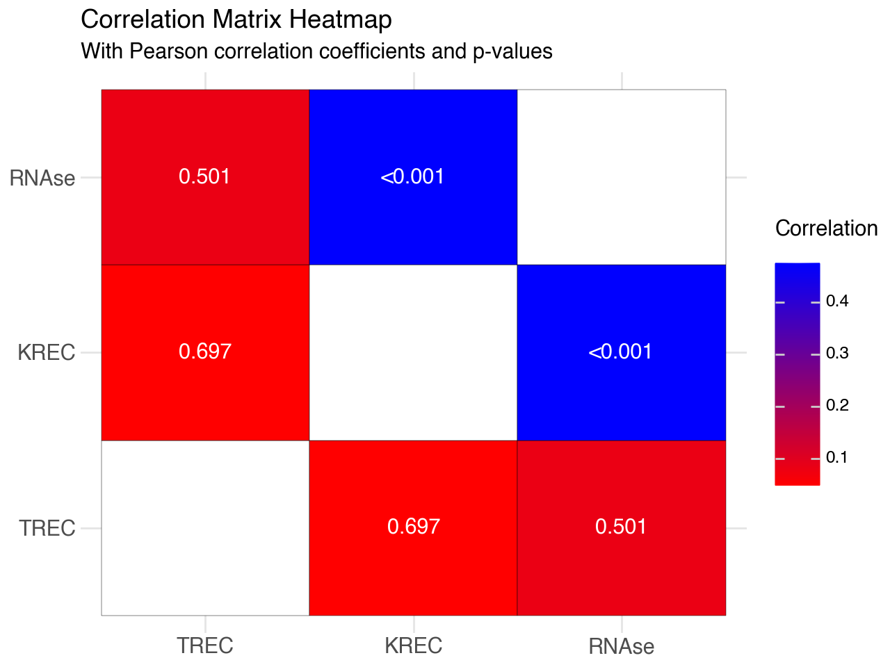
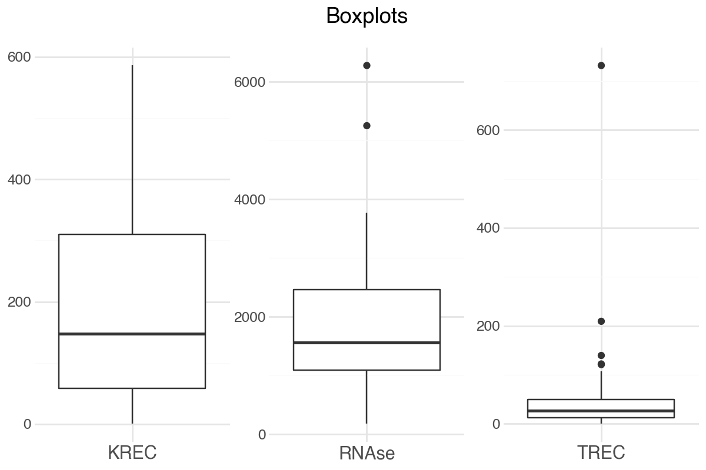
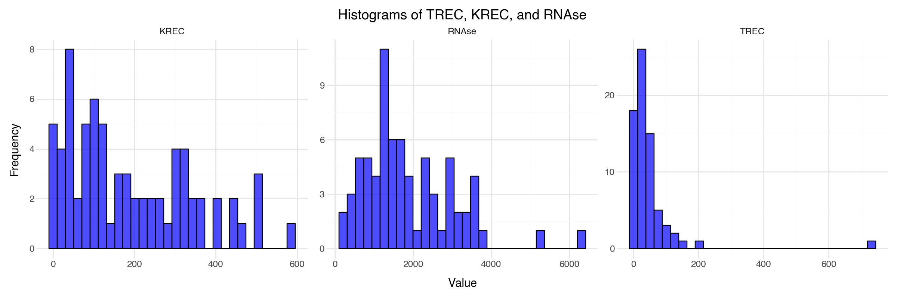
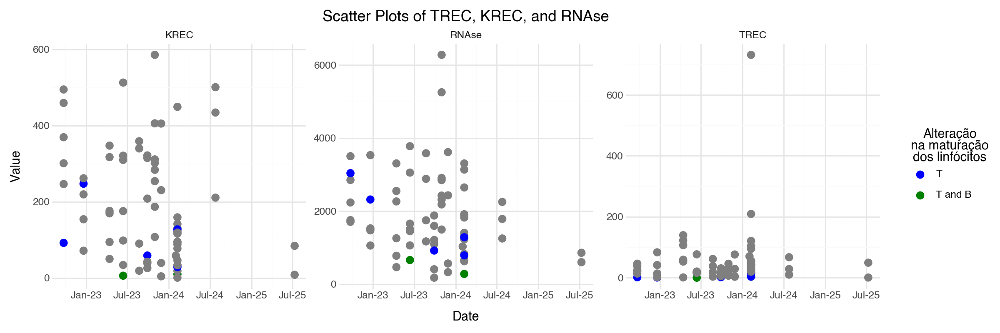
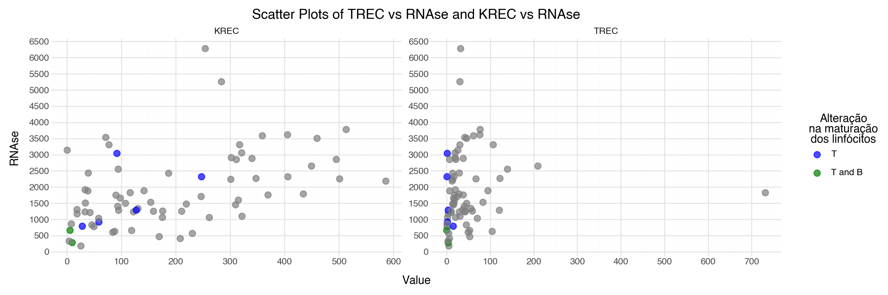
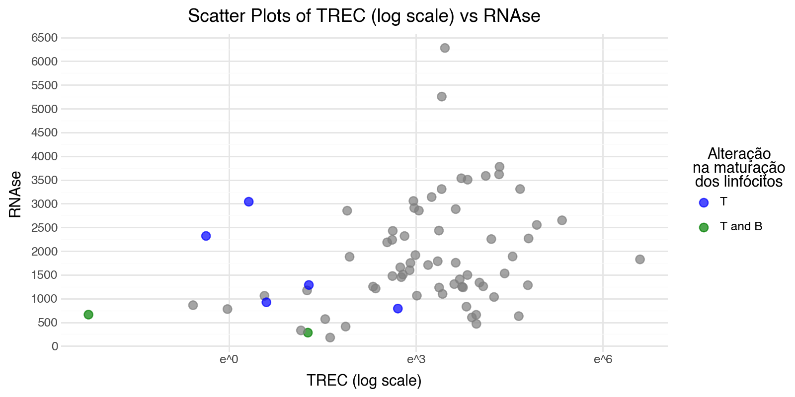

# Import Required Libraries
import pandas as pd, numpy as np, statsmodels.api as sm, warnings
from scipy.special import logit
from scipy.stats import pearsonr
from sklearn.metrics import (
precision_recall_fscore_support,
average_precision_score,
confusion_matrix
)
from statsmodels.tools.sm_exceptions import ConvergenceWarning
from plotnine import (
ggplot, aes, labs,
geom_tile,
geom_text,
geom_line,
geom_point,
geom_vline, geom_boxplot, geom_histogram, geom_ribbon,
scale_fill_gradient, scale_color_manual,
scale_x_discrete, scale_x_continuous, scale_x_datetime,
scale_y_discrete, scale_y_continuous,
theme, theme_minimal, element_text, facet_wrap,
)
warnings.filterwarnings("ignore", category=ConvergenceWarning)TK Analysis
TK Comparação.xlsx -> data.xlsx file, cells B1 to G73 processed.
# Load the Excel file
data = pd.read_excel('data.xlsx', usecols='B:G', nrows=73)
# Add AML column
data['AML'] = data['Código'].apply(
lambda x: 'T' if x in ['IDP413', 'IDP421', 'IDP468', 'IDP527', 'IDP530'] else
('TB' if x in ['IDP450', 'IDP499'] else None)
)
# Convert RNAse column to float64
data['RNAse'] = pd.to_numeric(data['RNAse'], errors='coerce')
print(data) Código Data Placa TREC KREC RNAse AML
0 IDP406 2022-09-23 Placa 1 21.051 494.942 2854.244 None
1 IDP407 2022-09-23 Placa 1 46.005 459.626 3505.153 None
2 IDP410 2022-09-23 Placa 1 24.408 246.587 1708.116 None
3 IDP412 2022-09-23 Placa 1 38.012 369.542 1755.735 None
4 IDP413 2022-09-23 Placa 1 1.374 91.927 3040.899 T
.. ... ... ... ... ... ... ...
67 IDP538 2024-07-25 Placa 14 67.305 501.038 2253.805 None
68 IDP539 2024-07-25 Placa 14 28.479 434.421 1787.374 None
69 IDP546 2025-07-10 Placa 17 49.309 84.228 603.738 None
70 IDP555 2025-07-10 Placa 17 0.562 8.179 861.445 None
71 R.S (Paciente Laire) 2024-02-01 Placa 12 70.345 58.412 1033.822 None
[72 rows x 7 columns]Descriptive analysis
Checking if Códigos are unique.
unique_codigo = data['Código'].nunique()
placa_counts = data.groupby('Código')['Placa'].nunique()
print(f"Unique Código: {unique_codigo}\n")
print(f"Placa counts per Código:\n\n{placa_counts}")Unique Código: 72
Placa counts per Código:
Código
IDP406 1
IDP407 1
IDP410 1
IDP412 1
IDP413 1
..
IDP538 1
IDP539 1
IDP546 1
IDP555 1
R.S (Paciente Laire) 1
Name: Placa, Length: 72, dtype: int64Correlation matrix with p-values (statistical significance) - Pearson type which captures linear correlations.
columns_to_analyze = ['TREC', 'KREC', 'RNAse']
correlation_matrix = data[columns_to_analyze].corr()
print(f"""
Correlation Matrix:
{correlation_matrix}
""")
p_values = np.zeros((len(columns_to_analyze), len(columns_to_analyze)))
for i, col1 in enumerate(columns_to_analyze):
for j, col2 in enumerate(columns_to_analyze):
if i != j:
_, p_value = pearsonr(data[col1].dropna(), data[col2].dropna())
p_values[i, j] = p_value
else:
p_values[i, j] = np.nan
print(f"""
P-Values Matrix:
{p_values}
""")
Correlation Matrix:
TREC KREC RNAse
TREC 1.000000 0.046622 0.080517
KREC 0.046622 1.000000 0.474950
RNAse 0.080517 0.474950 1.000000
P-Values Matrix:
[[ nan 6.97360521e-01 5.01365246e-01]
[6.97360521e-01 nan 2.49285818e-05]
[5.01365246e-01 2.49285818e-05 nan]]
correlation_matrix.values[np.diag_indices_from(correlation_matrix)] = np.nan
corr_df = correlation_matrix.reset_index().melt(id_vars='index')
corr_df.columns = ['y', 'x', 'value']
# Prepare p-value DataFrame
pval_df = pd.DataFrame(
p_values, columns=correlation_matrix.columns, index=correlation_matrix.index
)
pval_df = pval_df.reset_index().melt(id_vars='index')
pval_df.columns = ['y', 'x', 'pval']
# Merge for annotation
corr_df = corr_df.merge(pval_df, on=['x', 'y'])
# Formatted label column for p-values
corr_df['pval_label'] = corr_df['pval'].apply(
lambda v: "<0.001" if pd.notnull(v) and v < 0.001 else (f"{v:.3f}" if pd.notnull(v) else "")
)
col_order = list(correlation_matrix.columns)
(
ggplot(corr_df) +
aes(x='x', y='y', fill='value') +
geom_tile(color='black') +
scale_x_discrete(limits=col_order) +
scale_y_discrete(limits=col_order) +
geom_text(aes(label='pval_label'), size=11, color='white') +
scale_fill_gradient(low='red', high='blue', na_value='white') +
labs(
title="Correlation Matrix Heatmap",
subtitle="With Pearson correlation coefficients and p-values",
x="", y="", fill="Correlation\n"
) +
theme_minimal() +
theme(
axis_text_x=element_text(size = 11),
axis_text_y=element_text(size = 11)
)
)
summary = data[columns_to_analyze].describe()
print(f"""
Descriptive Statistics:
{summary}
""")
Descriptive Statistics:
TREC KREC RNAse
count 72.000000 72.000000 72.000000
mean 46.600403 189.600556 1864.727931
std 90.382545 151.811625 1150.747681
min 0.105000 0.553000 179.528000
25% 12.124250 58.682750 1089.889750
50% 27.158500 147.874500 1564.314000
75% 50.184250 310.190500 2463.193500
max 731.635000 585.944000 6279.900000
data_melted = data.melt(
value_vars=columns_to_analyze, var_name='Column', value_name='Value',
id_vars=['Código', 'Placa', 'Data', 'AML']
)
(
ggplot(data_melted) +
aes(x='Column', y='Value') +
geom_boxplot() +
facet_wrap('~Column', scales='free') +
labs(title="Boxplots", x="", y="") +
theme_minimal() +
theme(
strip_text_x=element_text(alpha=0),
axis_text_x=element_text(size=11), figure_size=(6, 4)
)
)
(
ggplot(data_melted, aes(x='Value')) +
geom_histogram(bins=30, fill="blue", alpha=0.7, color="black") +
facet_wrap('~Column', scales='free') +
labs(title="Histograms of TREC, KREC, and RNAse", x="", y="Frequency") +
theme_minimal() +
theme(figure_size=(12, 4), axis_text_x=element_text(size=10))
)
# Scatter-plots side by side
(
ggplot(data_melted, aes(x='Data', y='Value', color='AML')) +
geom_point(size=3) +
facet_wrap('~Column', scales='free') +
labs(
title="Scatter Plots of TREC, KREC, and RNAse",
x="", y="", color="Alteração\nna maturação\ndos linfócitos"
) +
scale_x_datetime(date_breaks='6 months', date_labels='%b-%y') +
scale_color_manual(
values=["blue", "green", "gray"],
breaks=["T", "TB"], # Only include "T" and "TB" in the legend
labels=["T", "T and B"]
) +
theme_minimal() +
theme(figure_size=(12, 4), axis_text=element_text(size=10))
)
# Prepare the data for scatter plots
scatter_data = data.melt(
id_vars=['Código', 'Placa', 'Data', 'AML', 'RNAse'],
value_vars=['TREC', 'KREC'],
var_name='Variable',
value_name='Value'
)
(
ggplot(scatter_data, aes(x='Value', y='RNAse', color='AML')) +
geom_point(size=3, alpha=0.7) +
facet_wrap('~Variable', scales='free') +
labs(
title="Scatter Plots of TREC vs RNAse and KREC vs RNAse",
x="",
y="RNAse",
color="Alteração\nna maturação\ndos linfócitos"
) +
scale_x_continuous(breaks=list(range(0, 800, 100))) +
scale_y_continuous(breaks=list(range(0, 7000, 500))) +
scale_color_manual(
values=["blue", "green", "gray"],
breaks=["T", "TB"], # Only include "T" and "TB" in the legend
labels=["T", "T and B"]
) +
theme_minimal() +
theme(figure_size=(12, 4), axis_text_x=element_text(size=10))
)
In the log scale for better visualization.
(
ggplot(data, aes(x='TREC', y='RNAse', color='AML')) +
geom_point(size=3, alpha=0.7) +
labs(
title="Scatter Plots of TREC (log scale) vs RNAse",
x="TREC (log scale)",
y="RNAse",
color="Alteração\nna maturação\ndos linfócitos"
) +
scale_x_continuous(trans='log') +
scale_y_continuous(breaks=list(range(0, 7000, 500))) +
scale_color_manual(
values=["blue", "green", "gray"],
breaks=["T", "TB"], # Only include "T" and "TB" in the legend
labels=["T", "T and B"]
) +
theme_minimal() +
theme(figure_size=(8, 4))
)
Defining cutoff values
data['LT'] = data['AML'].apply(lambda x: 1 if x in ['T', 'TB'] else 0)
data['LB'] = data['AML'].apply(lambda x: 1 if x == 'TB' else 0)
print(f"""
T-cell lymphopenia:
{data.groupby('LT').size()}
""")
print(f"""
B-cell lymphopenia:
{data.groupby('LB').size()}
""")
T-cell lymphopenia:
LT
0 65
1 7
dtype: int64
B-cell lymphopenia:
LB
0 70
1 2
dtype: int64
T- and B- cell lymphopenias
# ============================================================
# CUT-OFF ANALYSIS USING L2-PENALIZED (RIDGE) LOGISTIC REGRESSION
# ============================================================
# Models:
# LT ~ TREC + RNAse
# LB ~ KREC + RNAse
# ============================================================
# ============================================================
# FUNCTION: cutoff_curve (L2-penalized logistic version)
# ============================================================
def cutoff_curve(data, y_col, main_col, inv_col, beta=2):
"""
Fit a ridge-penalized logistic regression model (L2) to determine
the optimal cutoff of a main biomarker (`main_col`) for classifying
a binary outcome (`y_col`), using an inverse covariate (`inv_col`)
as an adjusting factor.
This function:
1. Standardizes both predictors.
2. Fits a ridge (L2) logistic model to mitigate small-sample or
rare-event instability.
3. Determines the optimal classification probability threshold
maximizing the F₂ score (recall-oriented metric).
4. Computes a cutoff curve for `main_col` as a function of `inv_col`,
including 95% confidence intervals (via the delta method).
5. Returns the cutoff curve data and prints key model performance
metrics and confusion matrix.
Parameters
----------
data : pandas.DataFrame
Input dataset containing the binary outcome and predictors.
y_col : str
Name of the binary outcome variable (0/1).
main_col : str
Main numeric predictor (variable for which cutoff will be derived).
inv_col : str
Inverse-related numeric predictor (enters model as adjustment term).
beta : float, optional
Weight for recall in the F-beta metric; default is 2 (recall emphasis).
Returns
-------
df_cut : pandas.DataFrame
Data frame with the computed cutoff curve and 95% confidence intervals.
Columns: [inv_col, 'cutoff', 'lower', 'upper', 'marker'].
inv_med : float
Median value of `inv_col` used for reference cutoff extraction.
Notes
-----
- The logistic regression uses L2 regularization (`alpha=1e-5`)
to stabilize estimates when few positive outcomes are present.
- Cutoff is reported at the median of `inv_col`.
- Out-of-range cutoffs are automatically clipped to valid limits.
"""
# ---- Step 1: Prepare and standardize data ----
df = data.copy()
y = df[y_col].astype(int).values
# Standardize predictors for numerical stability
mu_main, sd_main = df[main_col].mean(), df[main_col].std(ddof=0)
mu_inv, sd_inv = df[inv_col].mean(), df[inv_col].std(ddof=0)
zM = (df[main_col] - mu_main) / sd_main
zI = (df[inv_col] - mu_inv) / sd_inv
# ---- Step 2: Fit ridge logistic regression ----
X = sm.add_constant(np.column_stack([zM, zI]), has_constant='add')
fit = sm.Logit(y, X).fit_regularized(
L1_wt=0, # pure L2 penalty
alpha=1e-5, # small regularization
maxiter=1000, # more iterations for convergence
trim_mode='off', # disable trimming (QC)
qc_tol=1e-10, # stricter QC tolerance
disp=False
)
b0, bM, bI = fit.params
cov = fit.normalized_cov_params
p = fit.predict(X)
# ---- Step 3: Determine optimal probability cutoff (F2) ----
f2 = lambda p_, r_, b=beta: (1 + b**2) * (p_ * r_) / (b**2 * p_ + r_ + 1e-12)
res = pd.DataFrame([
(t,) + precision_recall_fscore_support(
y, (p >= t).astype(int), average='binary', zero_division=0
)[:2]
for t in np.linspace(0, 1, 501)
], columns=['thr', 'prec', 'rec'])
res['f2'] = f2(res.prec, res.rec)
prob_star = float(res.loc[res.f2.idxmax(), 'thr'])
logit_star = logit(prob_star)
# ---- Step 4: Compute cutoff curve ----
inv_seq = np.linspace(df[inv_col].min(), df[inv_col].max(), 200)
zI_seq = (inv_seq - mu_inv) / sd_inv
# Compute main variable cutoff at each inverse value
zM_cut = (logit_star - b0 - bI * zI_seq) / bM
main_cut = mu_main + sd_main * zM_cut
# Approximate 95% CI via delta method
var_zM = []
for zr, zm in zip(zI_seq, zM_cut):
grad = np.array([-1 / bM, -zm / (bM + 1e-12), -zr / bM])
var_zM.append(grad @ cov @ grad)
se_main = sd_main * np.sqrt(np.maximum(var_zM, 0))
df_cut = pd.DataFrame({
inv_col: inv_seq,
'cutoff': main_cut,
'lower': main_cut - 1.96 * se_main,
'upper': main_cut + 1.96 * se_main,
'marker': main_col
}).dropna()
# ---- Step 5: Get cutoff at median inv_col ----
inv_med = float(df[inv_col].median())
opt_main = float(df_cut.loc[(df_cut[inv_col] - inv_med).abs().idxmin(), 'cutoff'])
# Clip cutoff if outside observed range
opt_main_clipped = np.clip(opt_main, df[main_col].min(), df[main_col].max())
if opt_main_clipped != opt_main:
print(f"⚠️ [{main_col}] Cutoff ({opt_main:.3f}) outside observed range "
f"[{df[main_col].min():.3f}, {df[main_col].max():.3f}], "
f"clipped to {opt_main_clipped:.3f}.")
opt_main = opt_main_clipped
# ---- Step 6: Evaluate model performance ----
pred_label = (p >= prob_star).astype(int)
prec, rec, f1, _ = precision_recall_fscore_support(
y, pred_label, average='binary', zero_division=0
)
f2val = f2(prec, rec)
pr_auc = average_precision_score(y, p)
cm = confusion_matrix(y, pred_label)
# ---- Step 7: Report results ----
print(f"\n[{main_col}] Optimal probability={prob_star:.3f}, "
f"median {inv_col}={inv_med:.3f}, cutoff={opt_main:.3f}")
print(f"Precision={prec:.3f}, Recall={rec:.3f}, F1={f1:.3f}, "
f"F2={f2val:.3f}, PR-AUC={pr_auc:.3f}")
print("Confusion matrix [[TN FP],[FN TP]]:\n", cm)
return df_cut, inv_med
# ============================================================
# RUN MODELS
# ============================================================
# Model 1: LT ~ TREC + RNAse
df_trec, RNAse_median = cutoff_curve(data, 'LT', 'TREC', 'RNAse')
# Model 2: LB ~ KREC + RNAse
df_krec, _ = cutoff_curve(data, 'LB', 'KREC', 'RNAse')
# Combine both cutoff curves
combined_df = pd.concat([df_trec, df_krec], ignore_index=True)
[TREC] Optimal probability=0.294, median RNAse=1564.314, cutoff=5.263
Precision=0.545, Recall=0.857, F1=0.667, F2=0.769, PR-AUC=0.719
Confusion matrix [[TN FP],[FN TP]]:
[[60 5]
[ 1 6]]
⚠️ [KREC] Cutoff (-2.327) outside observed range [0.553, 585.944], clipped to 0.553.
[KREC] Optimal probability=0.234, median RNAse=1564.314, cutoff=0.553
Precision=0.667, Recall=1.000, F1=0.800, F2=0.909, PR-AUC=0.583
Confusion matrix [[TN FP],[FN TP]]:
[[69 1]
[ 0 2]](
ggplot(combined_df)
+ aes(x="RNAse", y="cutoff")
+ geom_ribbon(aes(ymin="lower", ymax="upper"), fill="skyblue", alpha=0.6)
+ geom_line(size=1.1, color="steelblue")
+ geom_vline(xintercept=RNAse_median, linetype="dashed", color="red")
+ scale_x_continuous(breaks=list(range(0, 6500, 1000)))
+ facet_wrap("~marker", scales="free_y")
+ labs(
title="Cutoff curves vs RNAse (L2-penalized Logistic Regression)",
x="RNAse",
y="Cutoff (95% CI)"
)
+ theme_minimal()
+ theme(
axis_title=element_text(size=11),
axis_text=element_text(size=10),
strip_text=element_text(size=12, weight="bold"),
figure_size=(12, 4)
)
)